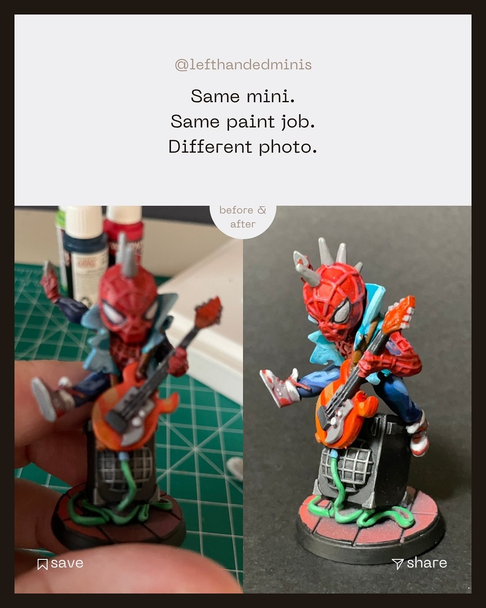
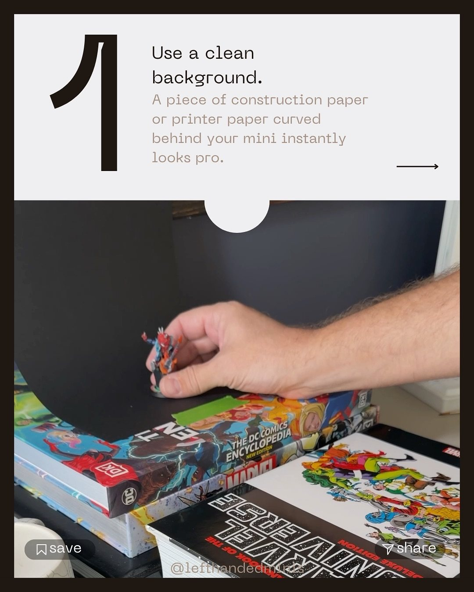
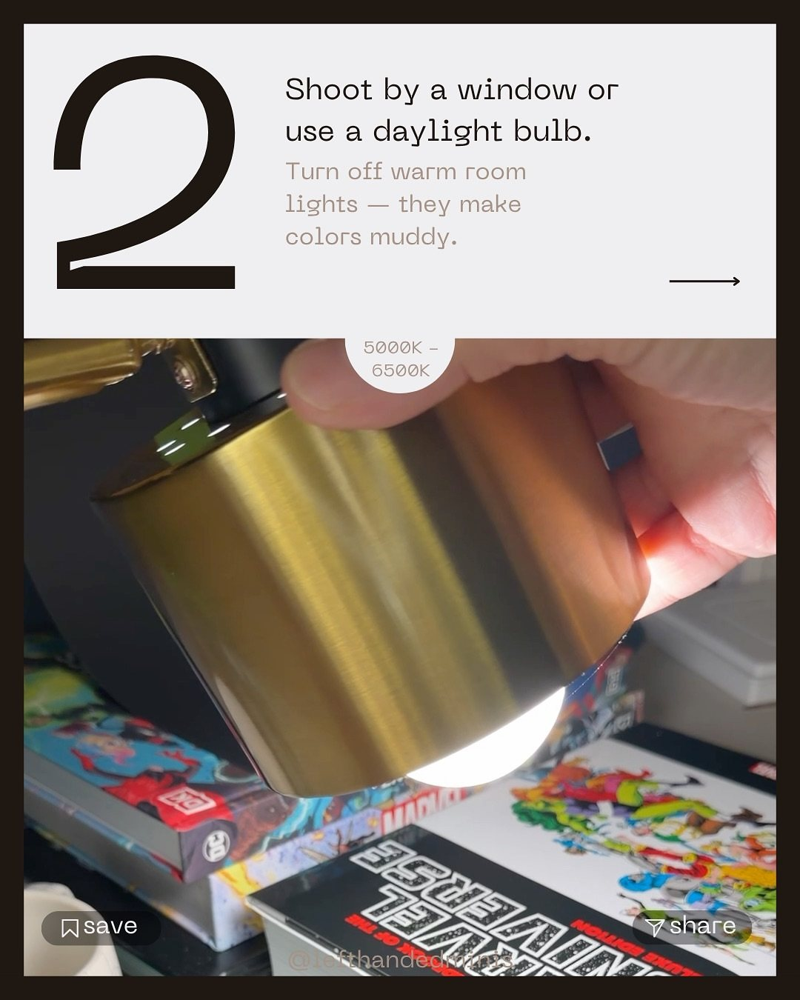
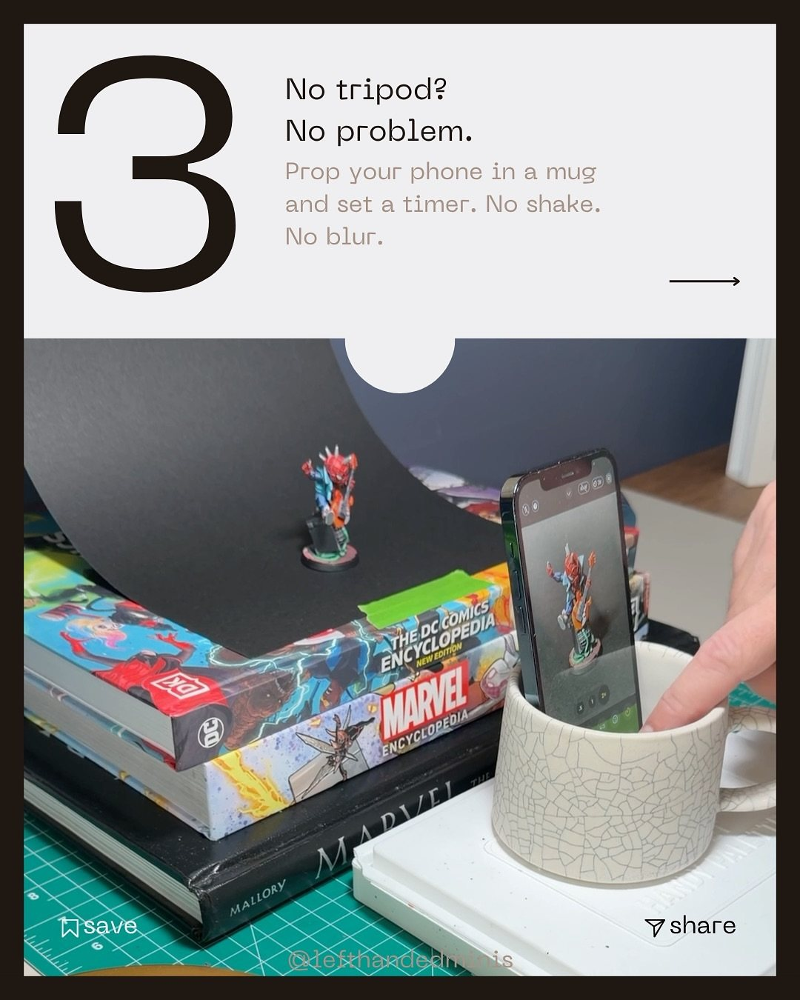
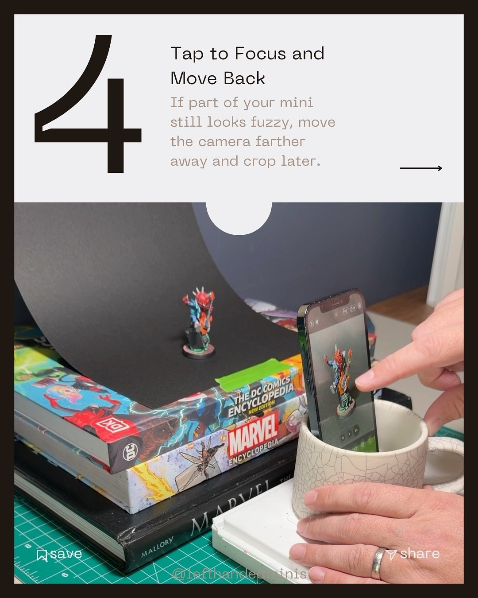
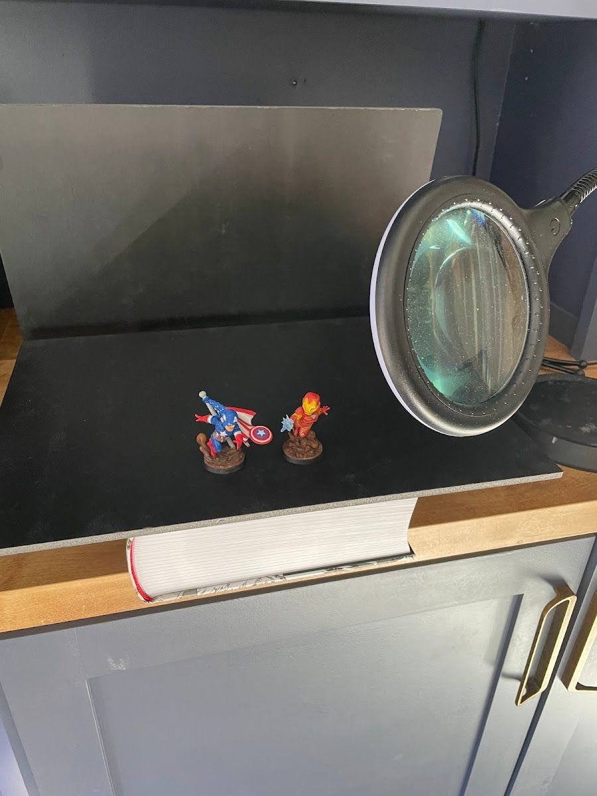

Your paint job looks great on the desk. Then you take a photo and it looks flat, yellow, blurry and somehow worse than it is. Your minis don't suck, your lighting does. The fix usually isn't a new camera. It's light, stability, focus distance and a clean background, and you can fix all four for the price of some construction paper.

Why this matters
A photo is how most people will ever see your mini. It's also how you see your own work clearly: a sharp, evenly lit photo shows you what's working and what to fix next. Better photos can feel like a bigger jump in skill than learning another painting technique.
The short version
- Clean background: a sheet of construction paper or printer paper, curved up behind the mini.
- Clean light: a window or a daylight bulb (5000K to 6500K). Turn off warm room lights.
- Steady camera: no tripod needed. Prop the phone in a mug and use a timer.
- Sharp focus: tap to focus, and if it's still fuzzy, move the camera farther back and crop later.
- Take a few: rotate the mini, shoot several angles, pick the best one.
1. Use a clean background
A sheet of construction paper or printer paper, taped down and curved up behind the mini (no hard corner), instantly makes the shot look intentional. The curve matters: it removes the horizon line so the mini floats on a seamless background. Pick a color that contrasts with the mini: dark for bright minis, light or grey for dark ones.

2. Use clean, daylight-balanced light
Shoot by a window, or use a daylight bulb in the 5000K to 6500K range. Then turn off the warm room lights. Mixed warm and cool light is what makes colors look muddy and skin tones look off. One clean light source, slightly above and to the front of the mini, is a great start.

3. Steady the camera (a mug works)
No tripod? Put your phone in a mug, lean it at the angle you want, and set a timer (two seconds is enough). Tapping the shutter button shakes the phone, and at this scale that shake is blur. The timer lets it settle.

4. Tap to focus, then step back
Phones struggle to focus very close. If part of the mini looks fuzzy, don't push the phone closer. Move it farther away, tap to focus on the face, and crop the photo afterward. You'll lose a little resolution and gain a lot of sharpness.

5. Take a few and pick the best
Every mini has a golden angle. Rotate the mini a little between shots, take several, and choose the one where the pose feels alive.
What I use now (and what I started with)
My early setup was about this simple: a dark sheet curved behind the mini on a counter, with a lamp off to the side. These days I use a small light box and my old Canon DSLR for finished shots (here's that setup), but the principles are exactly the same: one clean light, a seamless background, a steady camera.

When my photography caught up, I re-shot some of my earliest Marvel United minis. It was a fun time capsule, and a good reminder that a lot of "bad" old minis were really just bad old photos.
After the shot: keep editing simple
For a budget setup, keep editing simple. Crop to the mini, then lower the exposure a little and bump the contrast slightly until the photo matches what you see in real life. That's usually all it needs.
Tradeoffs
- Phone vs. camera. Modern phones are great for this. A dedicated camera only pulls ahead once you control light and stability anyway.
- White vs. black backgrounds. White is forgiving and bright. Black is dramatic but needs more care (see foam vs. velvet).
- Light box. Nice to have, not required. A window and paper get you most of the way.
Checklist
- Seamless paper background, curved
- One daylight source, room lights off
- Phone in a mug, timer on
- Tap to focus on the face
- Too fuzzy? Step back and crop
- Rotate and take several
- Crop, then nudge exposure down and contrast up until it matches real life
Next: find the golden angle for your lead photo.